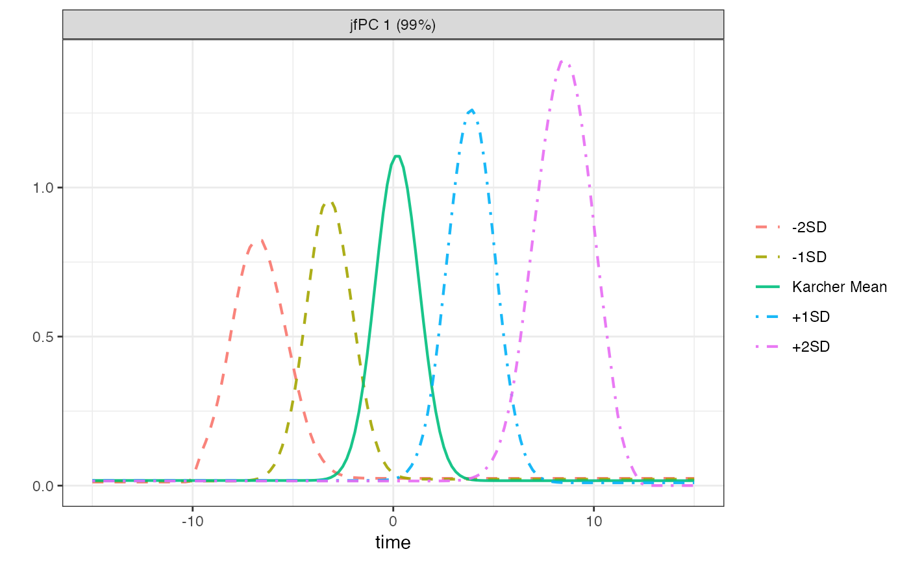

Plot principal component directions
plot_pc_directions.RdFunction for plotting the functional PC directions
Usage
plot_pc_directions(
fpcs,
fdasrvf,
fpca_method,
times = NULL,
digits = 0,
alpha = 1,
nrow = 1,
linesizes = NULL,
linetype = TRUE,
freey = FALSE
)Arguments
- fpcs
Vector of numbers identifying the PCs to include in the plot
- fdasrvf
Object output from jointFPCA, horizFPCA, or vertFPCA
- fpca_method
Character string specifying the type of elastic fPCA method to use ('jfpca', 'hfpca', or 'vfpca')
- times
Optional vector of times (if not included, times will be represented on the interval from 0 to 1)
- digits
Number of digits to print in the title for the proportion of variability explained by a PC
- alpha
Vector of alpha values associated with lines in plot (length must match number of lines in plot)
- nrow
Number of rows to use when creating a grid of plots
- linesizes
Vector of line widths associated with lines in plot (length must match number of lines in plot)
- linetype
Vector of line types (e.g., "solid" or "dashed") associated with lines in plot (length must match number of lines in plot)
- freey
Indicator for whether y-axis should be freed across facets
Examples
# Load packages
library(dplyr)
library(tidyr)
# Select a subset of functions from shifted peaks data
sub_ids <-
shifted_peaks$data |>
select(data, group, id) |>
distinct() |>
group_by(data, group) |>
slice(1:4) |>
ungroup()
# Create a smaller version of shifted data
shifted_peaks_sub <-
shifted_peaks$data |>
filter(id %in% sub_ids$id)
# Extract times
shifted_peaks_times = unique(shifted_peaks_sub$t)
# Convert training data to matrix
shifted_peaks_train_matrix <-
shifted_peaks_sub |>
filter(data == "Training") |>
select(-t) |>
mutate(index = paste0("t", index)) |>
pivot_wider(names_from = index, values_from = y) |>
select(-data, -id, -group) |>
as.matrix() |>
t()
# Obtain veesa pipeline training data
veesa_train <-
prep_training_data(
f = shifted_peaks_train_matrix,
time = shifted_peaks_times,
fpca_method = "jfpca"
)
#> ℹ Using lambda = 0
#> ℹ Initializing...
#> ℹ Computing Karcher mean of 8 functions in SRSF space...
#> ℹ Entering iteration 1...
# Plot principal directions of PC1
plot_pc_directions(
fpcs = 1,
fdasrvf = veesa_train$fpca_res,
fpca_method = "jfpca",
times = -shifted_peaks_times,
linesizes = rep(0.75,5),
alpha = 0.9
)
